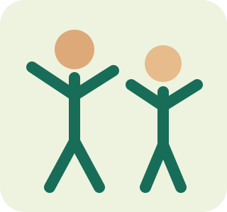

مدرسة العائلة 360 · الفئة 4–8 · نسخة تجربة
مغامرات الحركة: قاعدة ومسار وتوازن
محاولاتك محفوظة في هذا المتصفح حسب الطفل الحالي. الصوت حسب توفره على الجهاز؛ الصور والتعليمات تظل متاحة.

محاولاتك محفوظة في هذا المتصفح حسب الطفل الحالي. الصوت حسب توفره على الجهاز؛ الصور والتعليمات تظل متاحة.